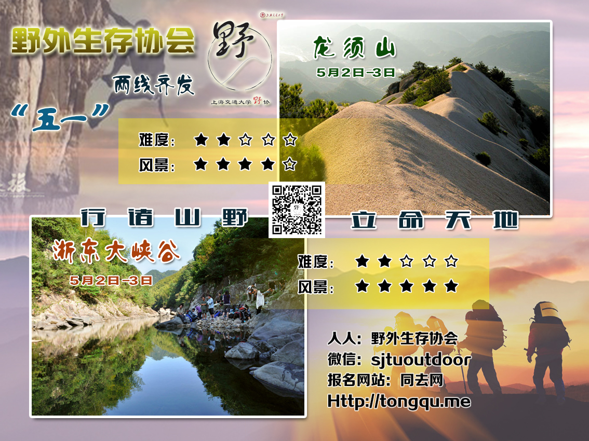
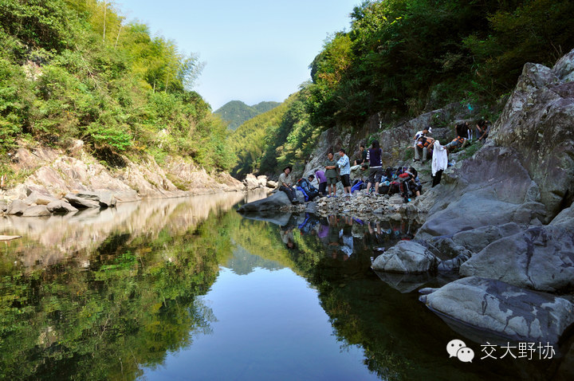
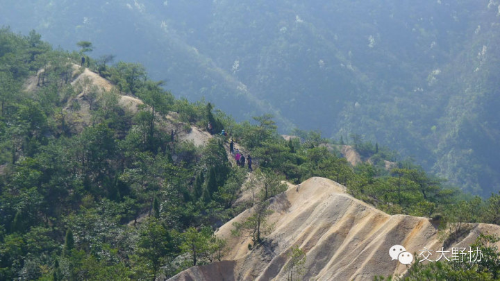
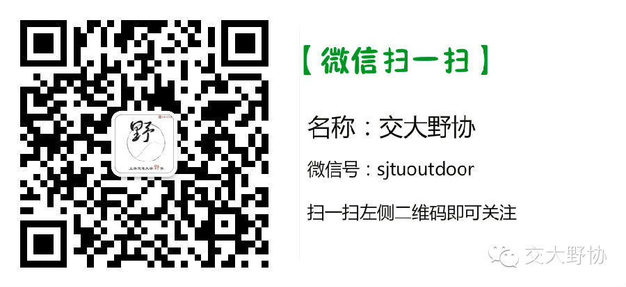

发信人: Julylovingu (小七), 信区: outdoor
标 题: 【五一路线预告】浙东&龙须山
发信站: 饮水思源 (2014年04月18日00:01:46 星期五)
五一小长假，小伙伴们还在纠结去哪玩耍？
不要烦恼！
跟着野协的脚步。探寻自然中的点滴吧！
本次五一路线有两条——
浙东大峡谷 & 龙须山
详情请关注我们的召集帖（微信、人人主页和BBSoutdoor版） 及时报名哦！
 screen.width - 200){this.width = screen.width - 200}">
· 浙东大峡谷
浙东大峡谷的线路包括清水溪和浑水溪，我们走的是其中的清水溪。
清水溪，又名逐步溪，一般驴友意识中的“浙东大峡谷”就是指的清水溪这段，长度适中
，水深及膝，是一条经典的徒步溯溪线路。峡谷未做开发，谷底开阔，落差很小，小水潭
无数，清可见底。
 screen.width - 200){this.width = screen.width - 200}">
强度：★★★
谷底地势开阔平坦，行程不长，起伏不大
难度：★★★★
岩壁湿滑，一路攀爬，难免湿身；若遇水涨，难度更大
风景：★★★★★
缘溪而行，水清见底，小水潭无数，极赞~
·龙须山
龙须山位于安徽省宣城市绩溪县登源河东岸，东连七姑山，有双峰：主峰龙峰，海拔1048
.6米，顶有龙池，四时不枯；次峰白沙峰，有龙台岩、石门、石梯、飞瀑诸景。明代陈章
有诗泳曰：“大峰小峰如削铁，绝顶摩空更奇绝。道人何处架飞云，直上峰头看龙穴”。
 screen.width - 200){this.width = screen.width - 200}">
龙须山多奇峰怪石，植被丰茂，瀑布流泉，云海霞光。西麓古有龙峰禅寺、古樵安，已毁
。龙峰禅寺传为明代胡宗宪读书之处。山有龙须草，制作佳笺，古称龙须纸，南唐后主李
珍爱有佳，储之于“澄心堂”，故龙须纸名噪天下倍价巴蜀，山因草而得名。
这是一片特殊的地貌，山上是风化的岩石沙砾，与周围青葱的群山有着鲜明的对比。真是
很有个性的一座山，与附近其他的山群相比，龙须山非常显目矗立在那里，带着沧桑岁月
中风化的苍凉和孤傲。
行程的第一天寄宿地——龙川风景区乃国家AAAAA级景区，是胡姓聚族而局的古村落，已有
一千六百余年的历史。传至当今“锦”字辈（胡姓国家领导人祖籍正系此地），计48世。
其人文景观与自然景观珠联璧合，浑然天成，风景迤逦，也是本次出行的一大看点。
screen.width - 200){this.width = screen.width - 200}">
强度：★★★
难度：★★★
风景：★★★★
 screen.width - 200){this.width = screen.width - 200}">
--
※ 来源:·饮水思源 bbs.sjtu.edu.cn·[FROM: 211.80.60.22]
|